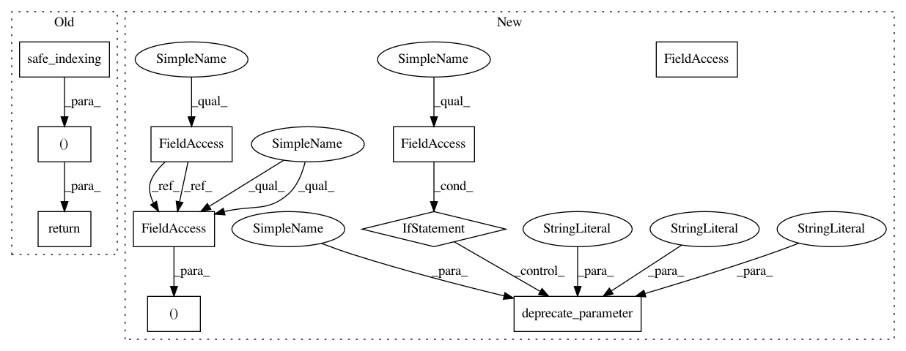

a19d398c1c974eb69d6e8e5e41d65500262089ce,imblearn/under_sampling/_prototype_selection/_neighbourhood_cleaning_rule.py,NeighbourhoodCleaningRule,_fit_resample,#NeighbourhoodCleaningRule#Any#Any#,139
Before Change
index_target_class = np.flatnonzero(selected_samples)
if self.return_indices:
return (safe_indexing(X, index_target_class), safe_indexing(
y, index_target_class), index_target_class)
else:
return (safe_indexing(X, index_target_class), safe_indexing(
y, index_target_class))
After Change
" Got {} instead.".format(self.threshold_cleaning))
def _fit_resample(self, X, y):
if self.return_indices:
deprecate_parameter(self, "0.4", "return_indices",
"sample_indices_")
self._validate_estimator()
enn = EditedNearestNeighbours(
sampling_strategy=self.sampling_strategy,
n_neighbors=self.n_neighbors,
kind_sel="mode",
n_jobs=self.n_jobs,
ratio=self.ratio)
enn.fit_resample(X, y)
index_not_a1 = enn.sample_indices_
index_a1 = np.ones(y.shape, dtype=bool)
index_a1[index_not_a1] = False
index_a1 = np.flatnonzero(index_a1)
// clean the neighborhood
target_stats = Counter(y)
class_minority = min(target_stats, key=target_stats.get)
// compute which classes to consider for cleaning for the A2 group
classes_under_sample = [
c for c, n_samples in target_stats.items()
if (c in self.sampling_strategy_.keys() and (
n_samples > X.shape[0] * self.threshold_cleaning))
]
self.nn_.fit(X)
class_minority_indices = np.flatnonzero(y == class_minority)
X_class = safe_indexing(X, class_minority_indices)
y_class = safe_indexing(y, class_minority_indices)
nnhood_idx = self.nn_.kneighbors(X_class, return_distance=False)[:, 1:]
nnhood_label = y[nnhood_idx]
if self.kind_sel == "mode":
nnhood_label_majority, _ = mode(nnhood_label, axis=1)
nnhood_bool = np.ravel(nnhood_label_majority) == y_class
elif self.kind_sel == "all":
nnhood_label_majority = nnhood_label == class_minority
nnhood_bool = np.all(nnhood_label, axis=1)
else:
raise NotImplementedError
// compute a2 group
index_a2 = np.ravel(nnhood_idx[~nnhood_bool])
index_a2 = np.unique(
[index for index in index_a2 if y[index] in classes_under_sample])
union_a1_a2 = np.union1d(index_a1, index_a2).astype(int)
selected_samples = np.ones(y.shape, dtype=bool)
selected_samples[union_a1_a2] = False
self.sample_indices_ = np.flatnonzero(selected_samples)
if self.return_indices:
return (safe_indexing(X, self.sample_indices_),
safe_indexing(y, self.sample_indices_), self.sample_indices_)
return (safe_indexing(X, self.sample_indices_),
safe_indexing(y, self.sample_indices_))
In pattern: SUPERPATTERN
Frequency: 3
Non-data size: 10
Instances
Project Name: scikit-learn-contrib/imbalanced-learn
Commit Name: a19d398c1c974eb69d6e8e5e41d65500262089ce
Time: 2018-09-13
Author: g.lemaitre58@gmail.com
File Name: imblearn/under_sampling/_prototype_selection/_neighbourhood_cleaning_rule.py
Class Name: NeighbourhoodCleaningRule
Method Name: _fit_resample
Project Name: scikit-learn-contrib/imbalanced-learn
Commit Name: a19d398c1c974eb69d6e8e5e41d65500262089ce
Time: 2018-09-13
Author: g.lemaitre58@gmail.com
File Name: imblearn/under_sampling/_prototype_selection/_neighbourhood_cleaning_rule.py
Class Name: NeighbourhoodCleaningRule
Method Name: _fit_resample
Project Name: scikit-learn-contrib/imbalanced-learn
Commit Name: a19d398c1c974eb69d6e8e5e41d65500262089ce
Time: 2018-09-13
Author: g.lemaitre58@gmail.com
File Name: imblearn/under_sampling/_prototype_selection/_tomek_links.py
Class Name: TomekLinks
Method Name: _fit_resample
Project Name: scikit-learn-contrib/imbalanced-learn
Commit Name: a19d398c1c974eb69d6e8e5e41d65500262089ce
Time: 2018-09-13
Author: g.lemaitre58@gmail.com
File Name: imblearn/under_sampling/_prototype_selection/_one_sided_selection.py
Class Name: OneSidedSelection
Method Name: _fit_resample